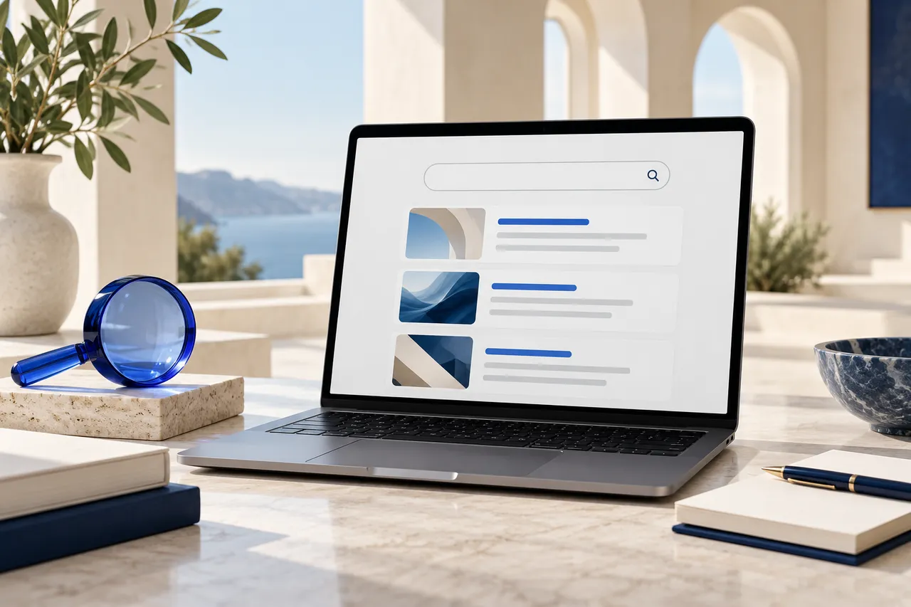

✚ Clinic DeskToday’s queue
03Sample visits02WaitingPKRPayment ledger
A001Sample visit AWaiting
A002Sample visit BWaiting
A003Sample visit CComplete
Visit details → Payment → Printable slip
PHP / SQLITE / OFFLINE OPERATIONS
WEB DEVELOPMENT / WORKFLOWS / SEARCH VISIBILITY
Websites and practical software that make your next step easier. I’m Umar Ilyas—a developer and workflow builder working remotely from Pakistan.
CLINIC OPERATIONS / SAMPLE

SELECTED PROJECTS / FROM IDEA TO WORKFLOW
Two recent builds, with a clear view of what they do, how they work and what the portfolio walkthrough demonstrates.
Visit details → Payment → Printable slip
PHP / SQLITE / OFFLINE OPERATIONS
 FICTIONAL HOTEL / OPERATIONS DEMO
FICTIONAL HOTEL / OPERATIONS DEMOBooking. Guest services. Operations.
JAVASCRIPT / CLOUDFLARE WORKERS / D1
WAYS TO WORK TOGETHER
Start with one business problem and a clear deliverable. Explore the service scope and relevant demos before we talk.
Responsive pages that explain your offer and make it easy for customers to get in touch.
Explore website services ↗Practical interfaces for orders, inventory, bookings and follow-up tasks, starting with a testable prototype.
Explore dashboard projects ↗Try an assistant or workflow with sample data and a human review step before planning live integrations.
Explore workflow prototypes ↗Clear technical foundations and useful content that explain your offer and help search systems interpret it.
Explore search visibility ↗A PRACTICAL TOOLKIT
Tools used across my projects, alongside areas I’m actively learning. Each tool has a purpose; the workflow comes first.
Structure
Responsive UI
Interaction logic
Clinic application
Local clinic records
Project tooling
Version control
Source & deployment
Hotel server code
Hotel demo storage
Project data schema
Learning & exploration
Workflow exploration
Prototyping & human review
14 tools and areas of practice
CLIENT FEEDBACK / SHARED WITH PERMISSION
Worked with me? Your honest feedback helps me improve and helps future clients understand the collaboration.
Leave a review ↗No client ratings published yet.
Real reviews are published with permission after approval.
How feedback works ↗MORE PROJECT WORK
Two substantial projects with real product logic, user roles, and interactive demos. Each case study separates working code from sample preview features.
 Interactive prototype
Interactive prototypeOrder assistant, staff approvals, status updates, sales dashboard. Sample dashboard interactions are available.
 Interactive prototype
Interactive prototypeSports events, player applications, community posts, event chat and admin tools.
PRODUCT THINKING · PROTOTYPES
Each concept starts with a familiar business friction, then makes a better customer or team workflow tangible. Fictional brands; real interactions.
PRODUCT STUDIES / 07
Seven interactive product studies across hospitality, travel, home services, customer support, operations, and ecommerce. Choose a workflow and try the idea.
Pain point: menus create friction at decision time. Try a clear menu and instant sample order total.
Pain point: trip planning starts with too many options. Choose preferences to shape a sample route.
 CLEARHOME / SERVICE ESTIMATESQUOTE
CLEARHOME / SERVICE ESTIMATESQUOTEPain point: unclear quotes slow down booking. Adjust service choices to see a transparent estimate.
Guide common questions to approved answers and move uncertain requests into a human-review queue.
Turn provider and payer follow-ups into a clear, exportable operations queue.
 STAYWISE HOUSE / OPERATIONSGUEST
STAYWISE HOUSE / OPERATIONSGUESTConnect a direct-booking request with the team’s sample arrivals and room view.
 PARCELPILOT / FULFILLMENTORDERS
PARCELPILOT / FULFILLMENTORDERSGive a small shop one view of new orders, packing steps, and stock checks.

SEO / AEO / GEO FOUNDATIONS
Clear service pages, useful answers and sound technical foundations help people understand your offer—and help search systems interpret it.
A CLEAR WAY TO BUILD
A collaborative process with a clear scope, review points and a working result you can inspect and try.
Map who does what today, where time is lost, and what a useful improvement should enable.
Agree on the simplest useful scope, user journey, and what counts as done before building.
Build an accessible, responsive experience with clear states and realistic sample content.
Walk through key scenarios, explain what is live versus a prototype, and document next steps.

A LITTLE ABOUT ME
I have a BS in Computer Science and hands-on experience in medical credentialing operations. That work taught me to communicate clearly, keep details organized, and solve real workflow problems.
Now I'm focused on building web projects and learning AI tools that can make small businesses run more smoothly—from better customer experiences to helpful automations.
More about working together ↗QUICK ANSWERS
A short, clear guide to what is shown here and how to discuss a project.
Umar Ilyas is a web developer and AI workflow builder based in Nowshera, Pakistan. He is a computer science graduate building responsive websites, business dashboards, and practical AI workflow prototypes.
Umar works on responsive websites, web application interfaces, practical workflow prototypes, and early AI or automation concepts. Project scope is agreed after a discovery conversation.
The portfolio demos use sample data. Restaurant AI includes a Node.js project concept; its external WhatsApp and local AI integrations require separate setup and verification. SportsHub and the product studies are presented as interactive previews, not live services.
Send Umar a short description of the users, workflow, and problem you want to improve through WhatsApp, email, or LinkedIn. He can then suggest a practical first step.